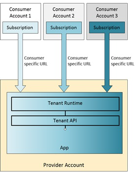

Multitenant Applications
With SAP Cloud Platform you can develop and run multitenant (tenant-aware) applications, that is, applications running on a shared compute unit that can be used by multiple consumers (tenants). Each consumer accesses the application through a dedicated URL.
- Isolate data
- Save resources by sharing them among tenants
- Perform updates efficiently, that is, in one step
- Must have an account for SAP Cloud Platform
- Must be subscribed to this application
- Receives a dedicated URL where to access the application

A subscription means that there is a contract between an application provider and a tenant who authorizes the tenant to use the provider's application.
Currently, you can trigger the subscription via the console client for testing purposes. For more information, see Providing Subscriptions to Provider Applications for Testing.
When an application is accessed via a consumer specific URL, the application environment is able to identify the current consumer. The application developer can use the tenant context API to retrieve and distinguish the tenant ID, which is the unique ID of the consumer. When developing tenant-aware applications, data isolation for different consumers is essential. It can be achieved by distinguishing the requests based on the tenant ID. There are also some specifics in the usage of different services when you develop your multitenant application.
For more information, see:
-
https://help.hana.ondemand.com/javadoc/index.html
 com.sap.cloud.account
com.sap.cloud.account  TenantContext
TenantContext 
- Shared in-memory data such as Java static fields will be available to all tenants
- Avoid any possibility that an application user can execute custom code in the application JVM, as this may give them access to other tenants' data
- Avoid any possibility that an application user can access a file system, as this may give them access to other tenants' data.
For more information, see Multitenancy in SAP Cloud Platform Connectivity.
Multitenant applications on SAP Cloud Platform have two approaches available to separate the data of the different consumers:
- Use a discriminator column in each table storing tenant data
With this approach, a single database schema is shared between all application consumers. The tenant ID can be used as a value in the discriminator column. To ensure data separation in the application, each SQL statement must include the tenant ID.
To apply data separation with a discriminator column, you can use the multitenancy annotations provided by EclipseLink JPA. For more information, see the EclipseLink User Guide: http://wiki.eclipse.org/EclipseLink/UserGuide/JPA/Advanced_JPA_Development/Single-Table_Multi-Tenancy
 .The basic approach is as follows:
.The basic approach is as follows:- Annotate entities that are to be tenant-aware with the @Multitenant annotation.
- Define the discriminator column using the @TenantDiscriminatorColumn annotation. As the length of the tenant ID on SAP Cloud Platform differs from the default length for the discriminator column in EclipseLink, it is important to set the correct length of 36 characters.
- Provide the tenant ID to the entity manager when accessing data for a multitenant entity.
- Use a separate schema for each tenant
With this approach, you create a new schema for each tenant, bind it to the application, and the application uses JNDI to dynamically look up the data source. The multitenant application must then use the appropriate data source when accessing tenant data. For more information, see Using Dynamic Data Source Lookup.
The document service automatically separates the documents according to the current consumer of the application. When an application connects to a document repository, the document service client automatically propagates the current consumer of the application to the document service. The document service uses this information to separate the documents within the repository. If an application wants to connect to the data of a dedicated consumer instead of the current consumer (for example in a background process), the application can specify the tenant ID of the corresponding consumer when connecting to the document repository.
For more information, see Data Isolation (Java).
The Keystore Service provides a repository for cryptographic keys and certificates to tenant-aware applications hosted on SAP Cloud Platform. Because the tenant defines a specific configuration of an application, you can configure an application to use different keys and certificates for different tenants.
For more information about the Keystore Service, see Keys and Certificates.
Access rights for tenant-aware application are usually maintained by the application consumer, not by the application provider. An application provider may predefine roles in the web.xml when developing the application. By default, predefined roles are shared with all application consumers, but could also be made visible only to the provider account. Once a consumer is subscribed to this application, shared predefined roles become visible in the cockpit of the application consumer. Then, the application consumer can assign users to these roles to give them access to the provider application. In addition, application consumer accounts can add their own custom roles to the subscribed application. Custom roles are visible only within the application consumer account where they are created.
For more information about managing application roles, see Managing Roles.
Trust configuration regarding authentication with SAML2.0 protocol is maintained by the application consumer.
For more information about configuring trust, see ID Federation with the Corporate Identity Provider.